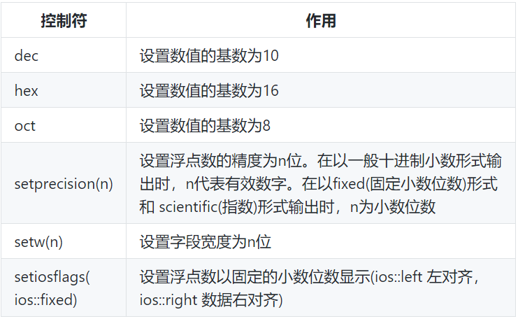
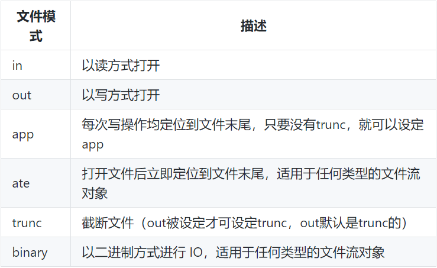
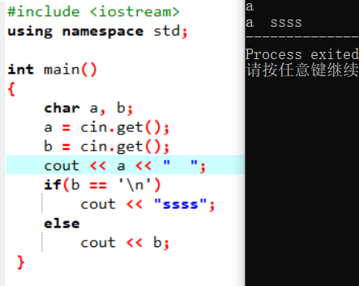
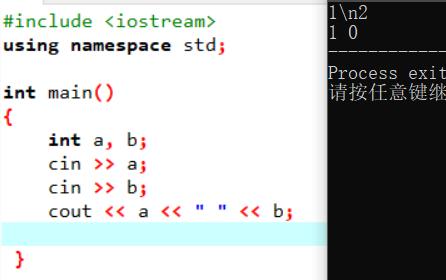
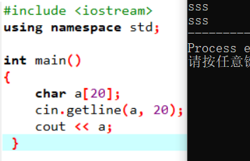
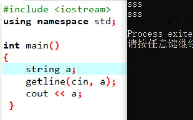
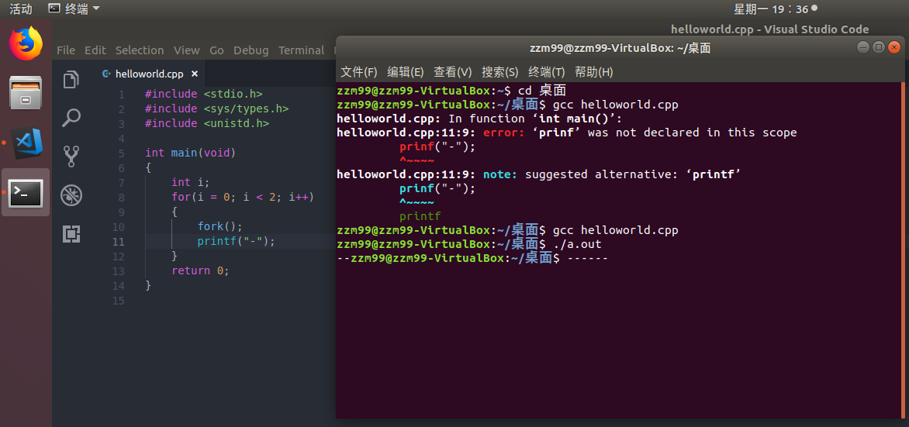
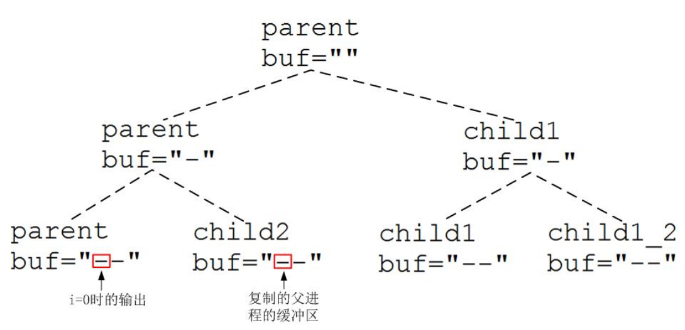
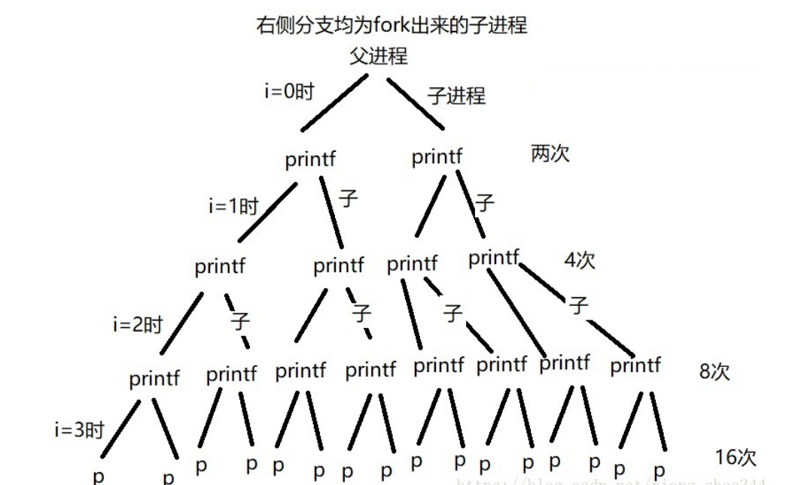

关于c++格式化输入输出相关的，简单的其实可以直接
#include <cstdio>
C++ 输入输出流
输入和输出并不是C++语言中的正式组成成分。C和C++本身都没有为输入和输出提供专门的语句结构。输入输出不是由C++本身定义的，而是在编译系统提供的I/O库中定义的。
C++ 的程序把输入和输出看做字节流。输入时，程序从输入流中抽取字节；输出时，程序将字节插入输出流中，流充当了程序和流源或流目标之间的桥梁。
C++输入输出中有两个基类，分别为ios_base和ios，而基于这两个基类实现了输入流istream和输出流ostream，然后基于这两个流实现了针对三种不同应用的类（或对象）：
- 标准输入输出：为了程序员使用方便，C++直接以对象的形式提供了几个标准输入输出工具，分别为：cin(标准输入)，cout(标准输出)，cerr(不带缓存的标准错误输出)，clog(带缓存的标准错误输出)。
- 文件输入输出：C++ 提供了三个类以方便程序员进行文件读写操作，分别为：ifstream（读文件），ofstream（写文件），fstream（读写文件）
- 字符串输入输出流：将字符串作为输入输出流进行处理，有三个对应的类，分别为：istringstream（字符串输入流），ostringstream（字符串输出流），stringstream（字符串输入输出流）。
注意 I/O 对象不能进行拷贝或者赋值操作！
I/O 操作一个与生俱来的问题是可能发生错误，I/O类定义了一些函数和标志，用来访问和操纵流的条件状态。一共有4个流状态：
- strm::badbit：流已经崩溃
- strm::failbit：有一个 I/O 操作失败
- strm::eofbit：到达文件结尾
- strm::goodbit：用来指出流未处于错误状态
一旦一个流发生错误，其上后续的 IO 操作都会失败，只有当一个流处于无错状态时，才可以从它读取数据，向它写入数据。确保一个流对象的状态的最简单的方法是将它当作一个条件来使用。
1 | while(cin >> word){ |
标准输入输出
使用 cin 读取数据，操作符读取指定类型的数据，直到与目标类型不匹配的第一个字符为止，期间会跳过空格，制表符和tab。(类似c的scanf)
注意，不能用cin语句把空格字符和回车换行符作为字符输入给字符变量，它们将被跳过。如果想将空格字符或回车换行符(或任何其他键盘上的字符)输入给字符变量，可以使用getchar函数。
使用 cout 输出数据时，可以使用控制符（控制符在头文件 iomanip 中），来进行格式化输出。例如要求以十六进制或八进制形式输出一个整数，或者对输出的小数只保留两位小数等。常用的控制符如下：

文件输入输出
文件流是以外存文件为输入输出对象的数据流。输出文件流是从内存流向外存文件的数据，输入文件流是从外存文件流向内存的数据。每一个文件流都有一个内存缓冲区与之对应。
头文件 fstream 定义了3个用于文件操作的文件类：
- ifstream类，它是从istream类派生的，用来支持从磁盘文件的输入。
- ofstream类，它是从ostream类派生的，用来支持向磁盘文件的输出。
- fstream类，它是从iostream类派生的，用来支持对磁盘文件的输入输出。
要以磁盘文件为对象进行输入输出，必须定义一个文件流类的对象，并将对象与文件关联起来。其实在用标准设备为对象的输入输出中，也是要定义流对象的，如cin、cout就是流对象，C++是通过流对象进行输入输出的。由于cin、cout已在iostream.h中事先定义，所以用户不需自己定义。在用磁盘文件时，由于情况各异，无法事先统一定义，必须由用户自己定义。
每一个文件流对象都定义了一个成员函数 open 来定位给定的文件，并视情况打开为读或写模式。如果在创建文件流对象时，提供了文件名，则open会被自动调用。没有提供文件名，将会创建空文件流对象，可以随后调用 open 将它与文件关联起来。
1 | ifstream in(ifile); // 构造一个 ifstream 对象并打开给定文件； |
调用 open 可能会失败（相应文件不存在或者对一个打开的文件流再次调用open），因此需要检查 open 是否成功：
if(out)
一旦一个文件流已经打开，就会保持与对应文件的关联。为了将文件流关联到另一个文件，必须首先用 close 函数关闭已经关联的文件。
1 | out.close(); |
注意，当一个 ifstream 对象离开其作用域时，与之关联的文件会自动关闭。
文件模式
每个流都有一个关联的 文件模式（file mode），用来指出如何使用文件。

每个文件流类型都定义了一个默认的文件模式，ifstream 关联的文件默认 in 打开，ofstream 关联的文件默认 out 模式打开，fstream 关联的文件默认 in 和 out 打开。下面是一些打开时选定模式的例子：
1 | ofstream outfile("filename", ofstream::out); // 隐含截断文件 |
字符串输入输出
sstream 头文件定义了三个类型来支持内存 IO，这些类型可以向 string 写入数据，从 string 读取数据，就像 string 是一个 IO 流一样。
输出时数据不是流向外存文件，而是流向内存中的一个存储空间。输入时从内存中的存储空间读取数据。在严格的意义上说，这不属于输入输出，称为读写比较合适。 因为输入输出一般指的是在计算机内存与计算机外的文件（外部设备也视为文件）之间 的数据传送。
sstream 定义来的类型增加了一些成员来管理与流相关联的 string，可以对 stringstream 对象调用这些操作，但不能对其它 IO 调用。
- stringstream strm： 未绑定的 stringstream 对象；
- stringstream strm(s)：一个 stringstream 对象，保存了 string s 的一个拷贝；
- strm.str()：返回 strm 所保存的 string 的拷贝；
- strm.str(s)：将 string s拷贝到 strm 中，返回 void.
- 用字符串流时不需要打开和关闭文件。
- 通过字符串流从字符数组读数据就如同从键盘读数据一样，可以从字符数组读入字符数据，也可以读入整数、浮点数或其他类型数据。如果不用字符串流，只能从字符数组逐个访问字符，而不能按其他类型的数据形式读取数据。这是用字符串流访问字符数组的优点，使用方便灵活。
反转 vector 中的数字：1
2
3
4
5
6
7
8
9
10
11
12
13
14vector<int> nums{123,456,789};
vector<int> reversed_nums;
for(auto n : nums){
ostringstream digit;//也可以用stringstream
digit << n;
string str_n = digit.str();
reverse(str_n.begin(), str_n.end());
int reversed_n;
istringstream rev_n(str_n);//也可以用stringstream
rev_n >> reversed_n;
reversed_nums.push_back(reversed_n);
}
// reversed_nums: {321, 654, 987}
我们知道在要求使用基类对象的地方，可以使用继承类型的对象取代，所以在接受一个 iostream 类型引用或者指针参数的函数，可以用一个对应的 fstream(或 sstream)类型来调用。
1 | C++引入了ostringstream、istringstream、stringstream这三个类，要使用他们创建对象就必须包含sstream.h头文件。 |
相关函数
istream, ostream 类提供了许多函数，常用的有 get, getline 等。
std::istream::get 从输入流中读取一个字符，赋给字符变量ch，常用的原型为：
istream& get (char& c);
std::istream::getline 从输入流中读取字符，直到遇到终止符号，默认换行符为终止符号，读到换行符后，丢弃换行符（C++ 还提供一个功能类似的全局函数 std::getline）。常用的原型如下：
istream& getline (char* s, streamsize n );istream& getline (char* s, streamsize n, char delim );
用getline函数从输入流读字符时，遇到终止标志字符时结束，指针移到该终止标志字符之后，下一个getline函数将从该终止标志的下一个字符开始接着读入。如果用cin.get函数从输入流读字符时，遇终止标志字符时停止读取，指针不向后移动，仍然停留在原位置，下一次读取时仍从该终止标志字符开始，这是getline函数和get函数不同之处。简单来说，getline将丢弃换行符，而get()将换行符保留在输入序列里，千万要注意 get 之后的换行符（ >> 操作符也不会丢弃换行符，同样需要注意）。
用法：1
2
3a = cin.get() (a为char或string)
getline(cin, a) (a为string)
cin.getline(a, 20, "*") (a的定义为char a[20]; "*"可有可无)




输入输出缓冲区
有时候程序会出现奇怪的输出，或者输入中读取的数据和想象不一致，这通常是由于存在输出输入缓冲区导致的。
在定义流对象时，系统会在内存中开辟一段缓冲区，用来暂存输入输出流的数据。缓冲区是用作中介的内存块，它是将信息从设备传输到程序或者从程序传输到设备的临时存储工具，用以匹配程序和设备之间速率的差距。
输出缓冲区
通常会把输出流中内容顺序存放在输出缓冲区中，直到输出缓冲区满或遇到cout语句中的endl(或’\n’，flush)为止，此时将缓冲区中已有的数据一起输出，并清空缓冲区。看下面的例子：
1 |
|
fork()只能在linux中使用，windows没有对应函数

printf是一个行缓冲函数，先写到缓冲区，满足条件后才将缓冲区刷新到对应文件中，刷新缓冲区的条件如下：
1）缓冲区填满；
2）写入的字符中有‘\n’、'\r'；
3）调用fflush手动刷新缓冲区；
4）调用scanf要从缓冲区读取数据时，也会将缓冲区内的数据刷新。
另外，当执行printf的进程或线程结束的时候，也会主动调用flush来刷新缓冲区。
本题中printf没有’\n’，是因为进程执行结束，才去刷新缓冲区，在屏幕上显示字符，这是理解本题的关键。
当i=1时，parent进程中printf的缓冲区内容为”–”，第一个’-‘为i=0时printf的输出，只是没有’\n’而囤积到这一次。child2进程中printf缓冲区的第一个’-‘则是因为子进程会复制父进程的缓冲区，因此复制了parent的buf。
程序结束即所有进程都结束后，会自动刷新缓冲区，此时会一下子把parent，child2，child1和child1_2的缓冲区输出到显示屏幕上，输出的顺序可能会随机。因此最后共输出8个’-‘。

另一个例子：
1 | for(i = 0; i < 4; i++) |
问：一共输出多少个a？ 答：30个(2+4+8+16)
先说下思路：父进程创建子进程后，fork函数是让子进程完全拷贝父进程，包括父进程上下文，什么意思呢？就是说父进程的EIP(CPU的下一条指令地址)以及变量等等一律拷贝，也就是说，父进程执行过的代码子进程是不会再执行，子进程下一条该执行的命令与父进程完全一样！！！
解析：
i=0时；fork()后，产生一个子进程，然后父子进程共同printf各1次；共两次；
之后，父子进程都进入i=1：
父子进程都会fork，也就是父进程fork了一个新的子进程；i=0的子进程也fork了一个子进程，共4个进程，每个进程都继续往下执行，也就是printf一次；共4次
以此类推：也就是2+4+8+16=30次。具体看下图：

fork会让子进程拷贝一切父进程的信息，包括这里面的变量i的值，所以子进程不会一直循环的fork下去，在i=2时，子进程(称为p2吧)fork出p3，然后p2继续执行printf，fork后创建的p3子进程的执行位置也和p2一样为printf，同时该创建的p3子进程自然下一次循环是从i=3开始，当i=3完成之后，i变成4，所有由总父进程创建出来的子进程都同时结束。
输入缓冲区
cin.ignore(a, ch)方法是从输入流（cin）中提取字符，提取的字符被忽略（ignore）。如果遇到 a 个字母或者遇到 ch，则执行终止；否则，它继续等待。它的一个常用功能就是用来清除以回车结束的输入缓冲区的内容，消除上一次输入对下一次输入的影响。下面是一个简单的示例：1
2
3
4
5
6
7
8
9
10
11
12char first, second;
cout << "Please, enter a word: ";
first = cin.get();
cin.clear();
cin.ignore(3);
cout << "Please, enter another word: ";
second = cin.get();
cout << "The first word began by " << first << '\n';
cout << "The second word began by " << second << '\n';
如果输入发生错误，那么流状态会被标记，必须用 cin.clear() 清除错误状态，以使程序能正确适当地继续运行。
不建议使用 std::cin.sync() 丢弃缓冲区内容，因为有的平台并不支持
陷阱
OJ 输入提前 break！！！有时候会犯这类错误，且不容易察觉。1
2
3
4
5
6
7
8
9
10
11
12
13
14
15
16while(cin >> p >> n){
set<int> basket;
int ans = -1;
for(int i=0;i<n;i++){
int xi;
cin >> xi;
if(basket.find(xi%p)!=basket.end()){
ans = i+1;
break; // 后面的数据并没有读，仍然在缓冲区中！！！
}
else{
basket.insert(xi%p);
}
}
cout << ans << endl;
}
读取操作时，>> 操作符 会跳过空白制表符，但是 getline 不会跳过。也就是说 getline 可能会读取 >> 操作后剩余下的换行符。假设一个输入流数据如下：1
2
310 2
name Jack
name John
如果用下面的程序读取数据：1
2
3
4cin >> N >> M;
for(int i=0; i<2; i++){
cin.getline(names[i]);
}
那么读到的names数组前两项将会是 “”, “name Jack”。因为 >> 读完 M 后还剩下一个换行符，将被 getline 读取到。解决办法就是在 第一句后面加上一句，吃掉换行符。（后面就不用吃掉换行符了，因为 getline 会丢弃换行符）1
2
3cin >> N >> M;
cin.get();
...